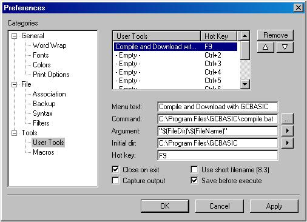
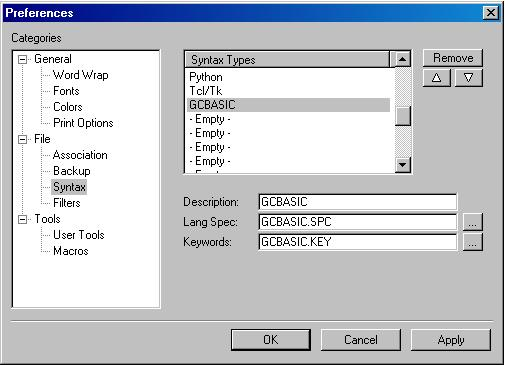

Installing and Using Great Cow BASIC:
- First, you'll need to install GCBASIC. See this web page
- Once you've downloaded Great Cow BASIC, just install. It is best if you allow everything to install to the default location - don't change any settings unless absolutely necessary. You might be asked to choose between gputils and MPASM for use with GCBASIC - choose whichever you have installed on your computer.
- Great Cow BASIC is now usable. You can drag the file that you want compiled on to "gcbasic.exe", which is found in the folder where GCBASIC is installed. A file called "compiled.hex" will be produced - download this to your PIC*, and you're ready to go! If you don't like compiling things this way, you can install an IDE. See below for more.
Installing a Programmer (optional but recommended)
Want to actually do something with the files you compile? You'll need to have a programmer and some corresponding programming software to download the output of the compiler to your PIC. There are many different programmers - this guide covers the installation of IC-Prog and WinPIC, two pieces of software which both support many free programmer designs and PICs.
Installing IC-Prog:
IC-Prog supports most free programmer designs that can be obtained from the internet. A list of supported programmers is available on the IC-Prog website.
- Download IC-Prog from http://www.ic-prog.com/
- Open the zip file, and extract "icprog.exe" to C:\Program Files\GCBASIC
- Go to the GCBASIC folder, and run IC-Prog. On the configuration screen that appears, set up the programmer you are using and the port it is attached to. If you are using Windows NT/2000/XP then choose "Windows API" for the interface, otherwise leave "Direct I/O" selected. Click OK.
- Choose the model of PIC that you will be using, and close IC-Prog.
- Open the "download.bat" file in Notepad. At the very bottom, add this command: "icprog -lcompiled.hex" (do not copy the quotes)
- Everything should be set up. Drag-and-drop a file onto compile.bat - your program will be compiled and loaded into IC-Prog ready to download to the PIC.
WinPic is another program which supports several different free programmer designs. Unfortunately it requires MPLAB to be installed, but it can download programs to many chips not supported by IC-Prog.
- Download WinPic from here or WinPic here.
- If you haven't done so already, download and install MPLAB. Follow the links from http://www.microchip.com/
- Run the installer for WinPic, then run WinPic.
- Click on the "Options" tab. In the "MPLAB DEV-file directory" box, enter the directory that MPLAB stores its .dev files in. This is typically "C:\Program Files\Microchip\MPLAB IDE\Device".
- Click on the "Interface" tab, and select the programmer that you're using in the "Interface Type" box. Close WinPic.
- Open the "download.bat" file, which should be in the same directory as gcbasic.exe Add this line to the bottom of the file:
- Save and close download.bat. Now, WinPic should automatically open up after compilation, ready to download the compiled code to your PIC.
If you have instructions for another programmer, we'd love
to post them here! Please send them to w_cholmondeley@users.sourceforge.net.
To add another programmer you basically need to install it and then
add the command to call it in "makeasm.bat".
Installing an IDE (optional)
Dragging and dropping isn't for everyone - you may like to have a program where you can edit your program, and then compile it with a single click. If so you might like to install an IDE and set it up to work with Great Cow BASIC. This guide covers the installation of GCB@Syn , Crimson Editor and GCBIDE.
Option 1: Installing GCB@Syn
See here for lastest news and version of the GCB@Syn IDE.
- Decompress the complete GCB@Syn folder inside the zip to your hard disk. It is recommended to use NOT the "Program Files" folder because of Windows restrictions for this folder.
- Run IDE.exe.
- Review the files displayed when initially starting the IDE.
- Operation:
- Remember, always start with IDE.exe in the root folder. IDE.exe sets an
environment variable with the actual path of GCB@Syn named G@SDir, so
all program locations can be handled as relative.
- When a GreatCowBasic sourcefile is opened, check out the Run-menu.
Through this menu you can access the oneclick commands. Try right
mousebutton also.
- The Run... commands (F5 - F8) starts a little tool G@Stool.exe which
calls the batchfiles for compiling sourcecode and programming
("flashing") the target microcontroller. By default the batchfiles are
named flashAVR.bat (when the chipmodel is an AVR) and flashPIC.bat (when
the chipmodel is a PIC). The chipmodel is autodetected by G@Stool.exe!
- By editing the batchfiles you can configure the programmer software for
your own needs. They are located in the G@Stools subfolder.
- If there is a batchfile "FlashThis.bat" present in the same folder as
the sourcefile, this batchfile is used for flashing. This may be useful
for project-specific flashing.
- Included programmer-software is avrdude for AVR and PICPgm for PIC. You
can add PicKit2; see hints in the PicKit2 subfolder. PicKit3 may work
similar, but its not currently tested (at Feb 2014).
environment variable with the actual path of GCB@Syn named G@SDir, so
all program locations can be handled as relative.
- When a GreatCowBasic sourcefile is opened, check out the Run-menu.
Through this menu you can access the oneclick commands. Try right
mousebutton also.
- The Run... commands (F5 - F8) starts a little tool G@Stool.exe which
calls the batchfiles for compiling sourcecode and programming
("flashing") the target microcontroller. By default the batchfiles are
named flashAVR.bat (when the chipmodel is an AVR) and flashPIC.bat (when
the chipmodel is a PIC). The chipmodel is autodetected by G@Stool.exe!
- By editing the batchfiles you can configure the programmer software for
your own needs. They are located in the G@Stools subfolder.
- If there is a batchfile "FlashThis.bat" present in the same folder as
the sourcefile, this batchfile is used for flashing. This may be useful
for project-specific flashing.
- Included programmer-software is avrdude for AVR and PICPgm for PIC. You
can add PicKit2; see hints in the PicKit2 subfolder. PicKit3 may work
similar, but its not currently tested (at Feb 2014).
Option 2: Installing Crimson Editor
- Download Crimson Editor from http://www.crimsoneditor.com/, and install it.
- Add support for GCBASIC highlighting by downloading this file, and extracting it to "C:\Program Files\Crimson Editor" (Thanks to Internet Lam for the extension.gcb file.)
- Open Crimson Editor
- Click "Tools > Configure User Tools"
- First, set up Crimson Editor so that it can compile GCBASIC programs. Enter the settings as shown in this screenshot, then click "OK":

- Next, set up Crimson Editor to use the GCBASIC syntax highlighting:

- Click "OK". Crimson Editor is now set up to work with Great Cow BASIC.
- Open a Great Cow BASIC demo file. Click "Document > Syntax Type > GCBASIC" to colour-code it
- Press F9 to compile your program. If you've set up a programmer to work with GCBASIC, then your program will be sent straight across to your PIC!
GCBIDE is an IDE written by Emile Tredoux for GCBASIC. Installing it is simple:
- Download GCBIDE from here: http://gcbide.googlepages.com/.
- Extract the contents of the archive to C:\Program Files\GCBASIC, and run GCBIDE.exe
- Click "Settings", and select the GCBASIC.EXE file.
- GCBIDE should now be set up, and ready to edit programs
Note that GCBIDE requires a recent version of GCBASIC to be installed
for the chip pinout related features to work. Releases after
October2007 or later must be used.